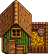

Coop
| Coop | Big Coop | Deluxe Coop | |
|  | 
|

| |
|---|---|---|---|
| Information | |||
| Upgrades From | N/A | Coop | Big Coop |
| Building Cost | |||
| Building Materials | |||
| Capacity | 4 | 8 | 12 |
| Animals | |||
| Footprint | 6x3 |
6x3 |
6x3 |
| Features |
|
|
|
The Coop is a type of farm building purchasable and upgradable from Robin at the Carpenter's Shop.
Construction
The Coop takes three days to construct. During this time, Robin is unreachable for dialogue or gifting.
Upgrading the Coop requires two days. During this time, the coop can be used as normal. Robin can be found inside the Coop for purposes such as dialogue or gifting.
The total cost of a Deluxe Coop, built from scratch, is  34,000g,
34,000g,  Wood (1200) and
Wood (1200) and  Stone (450) (Or, if all wood and stone are bought from Robin during Year 1,
Stone (450) (Or, if all wood and stone are bought from Robin during Year 1,  55,000g, and
55,000g, and  139,000g if bought in Year 2+.)
139,000g if bought in Year 2+.)
If the player chooses the Meadowlands Farm Map, there will be a coop built on their farm to start.
Features
The coop can house chickens, ducks, rabbits, and dinosaurs. Once you have unlocked an animal by building the coop needed to house it, that animal can be placed in any other non-upgraded coops you have built as well.
The Deluxe Coop features an Autofeed System; hay from your silos will be automatically distributed. (You can still let the animals feed on grass outside, and the hay will not be eaten.)
Coop Animals may be stuck outside at night if the coop doors are closed. The conditions for this are not clear (see Animals trapped outside). If an animal is stuck outside the coop at night, the next day their mood will be "grumpy". Animals stuck outside are also subject to Wild Animal Attacks.
The Coop can also be used in a manner similar to the Shed for storing Chests, Artisan Equipment, Furniture, etc. The animals are undisturbed by the clutter, even if their paths are blocked. However, excessive obstructions may prevent the spawning of coop animal products.

Interior

Coop Interior

Big Coop Interior

Deluxe Coop Interior
| Buildings | ||
|---|---|---|
| Merchants | Abandoned House • Adventurer's Guild • Blacksmith • Bookseller • Carpenter's Shop • Casino • Desert Trader • Fish Shop • Giant Stump • Harvey's Clinic • Ice Cream Stand • Island Trader • JojaMart • Marnie's Ranch • Oasis • Pierre's General Store • Qi's Walnut Room • The Stardrop Saloon • Traveling Cart • Volcano Dwarf • Wizard's Tower | |
| Houses | 1 River Road • 2 River Road • 1 Willow Lane • 2 Willow Lane • 24 Mountain Road • Elliott's Cabin • Farmhouse • Island Farmhouse • Leah's Cottage • Mayor's Manor • Tent • Trailer • Treehouse | |
| Farm Buildings | Farming | Barn • Cabin • Coop • Fish Pond • Greenhouse • Mill • Pet Bowl • Shed • Silo • Slime Hutch • Stable • Well |
| Special | Desert Obelisk • Earth Obelisk • Farm Obelisk • Gold Clock • Island Obelisk • Junimo Hut • Water Obelisk | |
| Other Buildings | Community Center • Dog Pen • Island Field Office • Joja Warehouse • Movie Theater • Museum • Spa • Witch's Hut | |